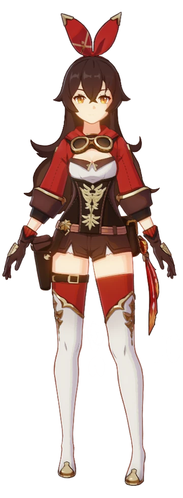
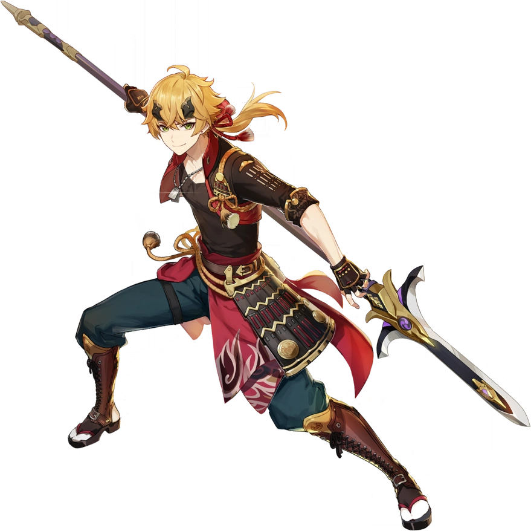

- Amber
- Thoma
All Character
My Contact

Amber
is a playable Pyro character in Genshin Impact.
As the only remaining Outrider of the Knights of Favonius, she is always ready to help the citizens of Mondstadt — whether it be something simple or perhaps a more challenging task.

Thoma
is a character that can easily fit both the support and the sub DPS role. He can provide shields with his elemental skill and elemental burst while also scorching the opponents around him and applying pyro whenever a normal attack was made while his elemental burst is up.
Back to TOP